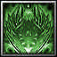

Stalker
[Bow]
+28,000 Damage
+1,650 Agility
-40% Attack Speed
+7.5% Critical Chance
Passive: "Corrupt Explosion" Chance to activate on attack
BowMaster Specialty Enhanced Arrow Rain (T): Adds corrupt explosions to Arrow Rain increasing the damage dealt
Obtain :
Drops from Corruptor Rectus with 3.5%